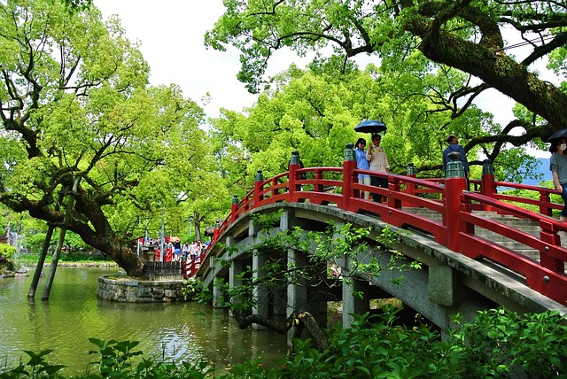

Fukuoka
The Dazaifu Bridge (part of Dazaifu Tenmangu Shrine) is situated in
the city of Dazaifu in Fukuoka Prefecture.
Typical plants of Japan include cherry blossoms (sakura), Japanese
maple (momiji), bonsai, and bamboo, which are valued for their
aesthetic significance and symbolism. Ornamental grasses, azaleas,
chrysanthemums, and wisteria are also commonly found in Japanese
gardens.